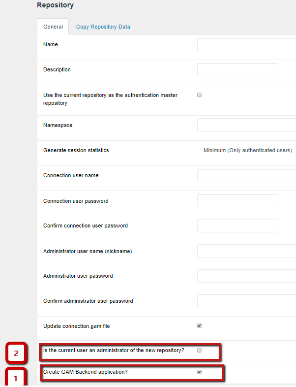

Only administrators of the GAM Manager Repository can create new Repositories.
Using the GAM Backend you can connect as an administrator of GAM Manager Repository and create, update, and delete Repositories. The GAM API provides the necessary methods to manage Repositories so you can change the GAM Backend as desired to change the interface for these operations.
1. Connect to GAM Manager Repository
2. With "gamhome" of the GAM Backend running, select the "Repositories" option of the menu (which calls the GAMExampleWWRepositories object). This option is available only when the current repository is "GAM Manager Repository".
There you can add, update, and delete repositories.

Then, you need to complete the following information (among other details):
The basic code to create a GAM repository is the following:
&GUID = GUID.NewGuid().ToString()
&RepositoryCreate.GUID = &GUID
&RepositoryCreate.Name = &Name
&RepositoryCreate.NameSpace = &NameSpace
&RepositoryCreate.Description = &Description
&RepositoryCreate.AdministratorUserName = &AdministratorUserName
&RepositoryCreate.AdministratorUserPassword = &AdministratorUserPassword
&RepositoryCreate.AllowOauthAccess = &AllowOauthAccess
&RepositoryCreate.ConnectionUserName = &ConnectionUserName
&RepositoryCreate.ConnectionUserPassword = &ConnectionUserPassword
&RepositoryCreate.GenerateSessionStatistics = &GenerateSessionStatistics
&RepositoryCreate.GiveAnonymousSession = True
&RepositoryCreate.AllowOauthAccess = True
&RepositoryCreate.CreateGAMApplication = &CreateGAMApplication
&isOK = &GAM.CreateRepository(&RepositoryCreate, &UpdateConnectionFile, &Errors) //&Errors is collection of GAMError.
//RepositoryCreate is based on RepositoryCreate GAM object
If &isOK
Commit
Else
Do 'DisplayErrors'
Endif
This property of the RepositoryCreate GAM object enables users to create the GAM Backend Application in the Repository that is going to be created.
If this Application isn't created, the users won't be able to execute the GAM Web Backoffice connected to that repository. Whether you will need to activate CreateGAMApplication or not will depend on your particular case.
Code:
&RepositoryCreate.CreateGAMApplication = &CreateGAMApplication
It allows the logged user to be an administrator of the newly created repository.
See gamadminand admin examples, where this property is explained in full detail.
Important: You can switch to any repository that was granted access using this checkbox (Is the current user an administrator of the new repository). This checkbox uses the GAM.RepositoryUserEnable API method.
You can initialize a repository using the settings of another one, by copying:
The Copy Roles option allows users to copy the roles of any repository (selected in the Repository Id combo) to the repository that is being created.
You must select the "Administrator Role Id", so the administrator user that is going to be created will belong to that role.
If you don't select an appropriate role, the following error is thrown:
You must configure an existing role in AdministratorRoleId property. (GAM39)
You can initialize the Repository with a GAM Application of another Repository (the repository selected in "Copy from Repository Id"). All the permissions and menus of that Application will be copied.
You must enter an Application Id in the edit box "Copy from Application Id". Otherwise, it throws the error:
You must configure an existing application in the Repository x (CopyFromRepositoryId). (GAM39)
If you need to copy the Roles-Permissions association, select this option.
You must provide an Application Id (from where the Permissions are going to be copied), along with an Administrator Role Id (because all the Roles are going to be copied from one repository to the other and you have to indicate which is the Administrator role).
The Administrator Role is used to know the role which is going to be assigned to the administrator user.
The Copy Security Policies option allows copying all the security policies from the repository indicated in "Copy from Repository Id".
Instead of initializing a repository from the data of another one (copying the GAM Application of some repository), you can create a GAM Application from scratch, while simultaneously creating the repository and initializing that repository with the Application created.
In this scenario, the Application has to be populated with data afterwards.
In order to create an Application for the Repository, use the Application method of the GAMRepositoryCreate object.
Example:
GUID = GUID.NewGuid().ToString()
&RepositoryCreate.GUID = &GUID //RepositoryCreate is based on RepositoryCreate GAM object
&RepositoryCreate.Name = &Name
&RepositoryCreate.NameSpace = &NameSpace
......
&GAMApplication.GUID = &GUIDApp //&GAMApplication is based on GAMApplication GAM External Object
&GAMApplication.Name = &Name
&GAMApplication.Description = &AppDescription
&GAMApplication.Version = "1.0"
&GAMApplication.AccessRequiresPermission = TRUE
&RepositoryCreate.Application = &GAMApplication
&isOK = &GAM.CreateRepository(&RepositoryCreate, TRUE, &Errors)
HowTo: Creating New Repositories from a GAM deploy tool package